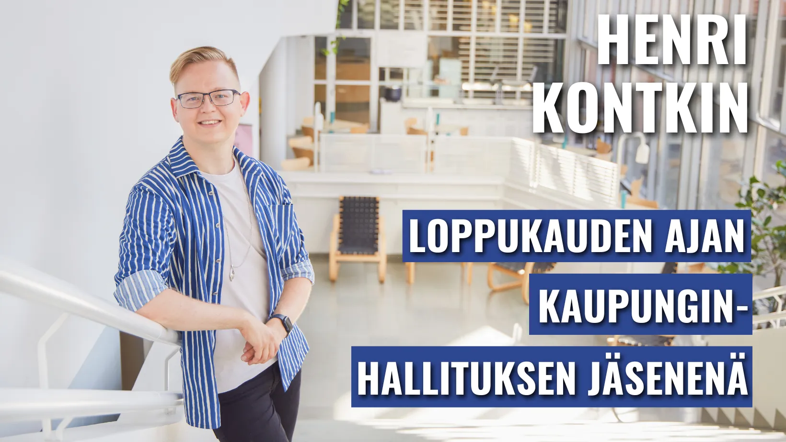
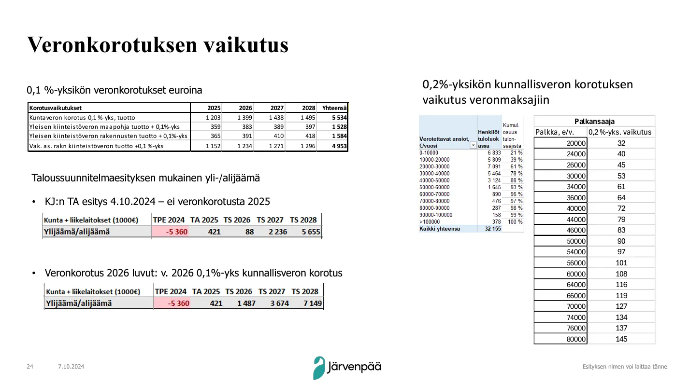
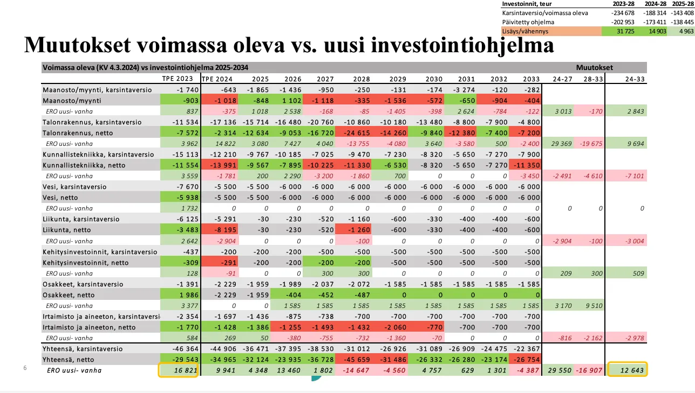

Uutisia: Minut nimitettiin Järvenpään kaupunginhallituksen jäseneksi

Kaupunginvaltuusto vahvisti maanantain 11.11.2024 kokouksessaan nimitykseni Järvenpään kaupunginhallituksen varsinaiseksi jäseneksi!
Olen toiminut jo yli vuoden verran kaupunginhallituksen varajäsenenä. Siten olen jo saanut perehtyä kaupunginhallituksen työhön niin kokoomuksen ryhmäkokouksiimme osallistuen kuin kokoukseen ajoittain kutsuttuna varanakin.
Tänään päätetty varsinainen jäsenyyteni kestää valtuustokauden loppuun saakka.
Kiitän suuresti Järvenpään Kokoomuksen valtuustoryhmäämme ja paikallisyhdistystä luottamuksesta tähän erittäin vastuulliseen tehtävään. Päätöksen yhteydessä luovun joulukuussa kaupunkikehityslautakunnan ja Järvenpään Vammaisneuvoston luottamustoimistani.
Nyt on kuitenkin aika kääriä hihat uudella vaikuttamisen areenalla. Yhteistyöllä ja yhdessä päättäen rakennamme entistäkin parempaa Järvenpäätä. Helppoa ei tule olemaan. Kaupungin tulevaisuudessa on edelleen sumua kuten kuntakentällä yleisestikin on. Eteemme kaupunginhallituksen kokouksissa on talouden ohella tulossa ainakin HSL-jäsenyyttä sekä asumispoliittista ohjelmatyötä.
Kuluvalla valtuustokaudella Järvenpää on selkeästi mennyt eteenpäin. Siitä sain pitää edellisessä valtuuston kokouksessamme varovaisen toiveikkaan ryhmäpuheenvuoron, kun päätimme Järvenpään ensi vuoden budjetista.
Järvenpään taloudesta ja toiminnasta vuonna 2025: Ryhmäpuheenvuoroni valtuuston talouskokouksessa
Pidin oheisen puheenvuoron Kokoomuksen valtuustoryhmämme edustajana maanantaina 11.11., kun määritimme Järvenpään ensi vuotta myöntämällä sen palvelualueiden käyttöön eurot. Siten muodostimme koko kaupungin budjetin ensi vuodelle.
Tuin valtuuston kokouksessa myös pientä muutosesitystä yhteensä yli 113 miljoonan euron kaupungin budjettiin. Muutosesitys koski kouluvalmentajia peruskouluissa.
Kouluvalmentajien osalta ensi vuoden opetuksen ja kasvatuksen määrärahoista puuttui yhteensä 87 000 euroa. Tuota lisärahaa olin tiukoista talouden raameista huolimatta osaltani valmis tukemaan. Määrärahat lisättiin palvelualueelle äänin 31–19. Turvasimme siten kouluvalmentajien tärkeää ja arvokasta työtä Järvenpäässä.
Puheenvuoroni:
Kiitos puheenjohtaja. Arvoisat valtuutetut, viranhaltijat ja kokousta seuraavat.
Käsissämme – ei fyysisenä mutta digitaalisena versiona – on Järvenpään kaupungin tuleva vuosi. Sitä määritetään, kun olemme myöntämässä palvelualueille budjetit, joilla kaupunkilaisille suunnattavia palveluita ja Järvenpään kaupungin toimintaa mahdollistetaan. Myönnettävät eurot luovat edellytykset lain kirjainten noudattamiselle, mutta ne kertovat myös toimintamme painopisteistä.
Talousarvioita on kuluvalla valtuustokaudella tullut päätöksentekoomme jo kolme, ja tämä neljäs edustaa myös sitä suuntaa, jota tällä kaudella Järvenpäälle on osoitettu.
Kun valtuustokauden alkupuolella luotiin Järvenpäälle uutta strategiaa, vallitsi meidän päättäjien välillä yhteinen näkemys siitä, että Järvenpään toiminnan kivijalka, kaiken mahdollistaja, eli talous, tuli saada vakaammaksi. Toimintamme tuli saada seisomaan tukevammin omilla jaloillaan.
Suurien investointien myötä paisunut velkakuorma, puolittuneet verotulot, soteuudistuksen jäljiltä olennaisesti heikentynyt velkojen suhde tuloihin ja nousseet korkokulut muodostivat todellisen riskin ajautumiseen kohti kriisikuntamenettelyä. Kumulatiivinen ylijäämä olisi lähestynyt pian nollaa, ja tilanteen korjaamiseksi on tällä kaudella väläytelty jopa 0,6 %-yksikön jättikorotuksia kunnallisveroon. Tämä oli siis tilanne esimerkiksi syksyllä 2022, kun taloutta suunniteltiin tuleville vuosille.
Kokoomuksen valtuustoryhmä on ollut niin aiempina kuin kuluvana syksynä erittäin huolissaan esillä olleista veronkorotusaikeista. Kunnallisveron korotus on hyvin järeä toimi, joka osuisi kunnallisveron matalan progression myötä hyvin laajasti eri tuloisiin kaupunkilaisiin. Veronkorotuksen aiheuttama ostovoiman leikkaantuminen tuntuisi jo esimerkiksi noin 1 600 euron kuukausituloilla elävien asukkaiden arjessa.

Veronkorotuksia onkin pyritty välttämään tekemällä erilaisia muutoksia aiempaan kurssiin. Kuten edellisessä pykälässä kuulimme, on tällä kaudella esimerkiksi saatettu kaupungin investointimenoja paljon aiempaa kestävämmälle tasolle. Samalla tulevien vuosien lainataakkamme osalta tilanne näyttää nyt valoisammalta.
Tähän helpotukseen ei kuitenkaan voida tuudittautua. Työtä on vielä paljon edessä.
Tämän valoisamman suunnan ja taloudellisesti turvallisemman uran ylläpitämisestä on kuitenkin ensi vuoden kesäkuusta alkaen vastuussa uusi kaupunginvaltuusto ja sen luottamushenkilöt.

Sitten hieman juuri ensi vuoden talousarviosta ja sen luvuista.
Talousarviostamme käy hyvin selvästi ilmi, että opetuksen ja kasvatuksen palvelut ovat olennaisin kaupunkimme menokehitystä ohjaava tehtävä. Kaupunkimme toimintakate ilman Järvenpään Vesi –liikelaitosta on ensi vuonna noin 113 miljoonaa euroa, josta miltei 81 miljoonaa suunnataan opetukseen ja kasvatukseen. Tämä on yli 70 % koko toimintakatteesta. Kun laadukkaiden varhaiskasvatuksen, perusopetuksen ja toisen asteen koulutuksen tuottamiseen suunnataan ylivertaisesti suurin osuus koko kaupungin menoista, on olennaista seurata jatkuvasti palveluiden kustannusvaikuttavuutta ja –tehokkuutta.
Kokoomuksen valtuustoryhmä muistuttaa, että myös esimerkiksi talousohjauksen ja –seurannan sekä esimerkiksi hankintoihin liittyvien käytänteiden on oltava kunnossa, jotta kustannusten kehitystä voidaan tarkasti seurata.
Samalla tarvitaan kaikessa kaupungin toiminnassa jatkuvaa toimintakatteiden ja etenkin menolisäysten vahtimista, jotta yhteisiä varoja käytetään vastuullisesti ja vaikuttavasti. Mikäli määrärahoja esimerkiksi oppimisen tuen lakimuutosten edellyttämiin lisäresursointeihin tullaan jo osoittamaan, ei rahaa tarvitse erikseen kaupungin budjettiin enää lisätä.
Olemme myös merkittävästi aiempia vuosia realistisemmalla pohjalla maanmyyntien suhteen. Kohtalokkaasta riippuvuudesta, jossa pienen pinta-alan kaupungissa on joka vuosi myytävä paljon maata käyttötalouden parantamiseksi, ollaan askel askeleelta pääsemässä irti. Samalla mahdollistuu tulevalla valtuustokaudella suuntaaminen edelleen kohti tasapainoisempaa mallia, jossa vuokraisimme maata sen kertaluonteisen myynnin sijaan. Tämä olisi kokoomuksen valtuustoryhmän mielestä ratkaisu kohti vakaampaa ja ennustettavampaa maankäyttöä.
Vuoden alusta käynnistyvän työllisyysalueen toiminta – etenkin sen menot – voivat myös vielä yllättää meidät. Muitakin riskejä tulee pitää silmällä, kuten mahdollisia alaskirjauksia, lakiuudistusten tuomia yllätysmenoja tai investointien lähtemistä uudelle paisumisuralle. Euroja on vahdittava, ja priorisointia on tehtävä.
Kokoomuksessa toivotaankin, että Järvenpään tulevaisuuden epävarmoihin oloihin suunnattaisiin edelleen varovaisesti, varautuen ja myrskynkestävyyttä vaalien. Tällöin mahdollisista poikkeusolosuhteista selvitään kuivemmin jaloin.
Epävarmuutta on nimittäin luvassa jatkossakin.
Jotain kuntakentän lähitulevaisuudesta kertoo esimerkiksi se, että jopa pääkaupunkimme Helsinki varoittaa nyt epävarmuudesta.
Pääkaupungin talousarvion yhteydessä todetaan, että taloussuunnittelussa on huomioitava väistämättä pysyvä käänne heikompaan. Sote-uudistuksen jälkeen Helsingin perinteisesti muhkea toimintaylijäämä on jäämässä pysyvästi pienemmäksi kuin aiemmin. Helsingissä kannetaan nyt huolta siitä, että kun vuosikatteen taso lähes puolittuu 2020-luvun alkupuolen tasosta, on ymmärrettävä, etteivät käyttömenot voi enää kasvaa samalla huolettomuudella kuin aiemmin ja investoinneilta on vaadittava parempaa kannattavuutta.
Kuulostaa varsin tutulta näin järvenpääläisenä. Meidän lähtötilanteemme ja velkasuhteemme on ollut niin erilainen verrattuna Helsinkiin, että meidän tuli havahtua tähän myrskyyn jo valtuustokautemme alussa.
Varautumista epävakauteen onkin jatkettava edelleen. Helsinkiäkin paljon pienempänä, naapurikuntiamme enemmän jo valmiiksi asukkaita verottavana ja kertyneen ylijäämän osalta heikommassa tilanteessa olevana kaupunkina suuntamme on jatkossakin oltava kohti vakautta.
Vain siten Järvenpää voi panostaa ajoissa auttamiseen, tulevaisuuteensa ja palveluihinsa. Ja siten pidämme kaupungista ja kaupunkilaisista yhdessä hyvää huolta, kuten kaupunginjohtaja osuvasti talousarvioesityksen esipuheessa totesi.
Mukavaa marraskuun jatkoa kaikille!